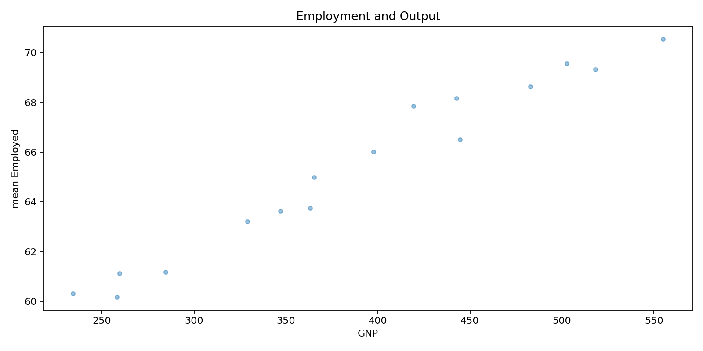

How are recorded economic output and employment associated?
Among 16 complete observations, Pearson r = 0.984 and Spearman rho = 0.985.

| predictor | outcome |
|---|---|
| 234.289 | 60.323 |
| 258.054 | 60.171 |
| 259.426 | 61.122 |
| 284.599 | 61.187 |
| 328.975 | 63.221 |
| 346.999 | 63.639 |
| 363.112 | 63.761 |
| 365.385 | 64.989 |
| 397.469 | 66.019 |
| 419.180 | 67.857 |
| 442.769 | 68.169 |
| 444.546 | 66.513 |
| 482.704 | 68.655 |
| 502.601 | 69.564 |
| 518.173 | 69.331 |
| 554.894 | 70.551 |
Only 16 annual observations; common trends and collinearity can create misleading correlations.
Difference the series and inspect time dependence before modelling.